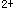

A.通过单纯扩散
B.载体中介的易化扩散
C.通道中介的易化扩散
D.原发性主动转运
E.继发性主动转运
参考答案：E
题目解析：葡萄糖进入一般细胞是以载体介导的易化扩散形式顺浓度差进行的，而在小肠黏膜和肾小管上皮细胞，葡萄糖的进入则是以逆浓度差的继发性主动转运方式实现的。
参考答案：B
A.增快
B.减慢
C.在正常范围
D.先不变后增快
E.先不变后减慢
参考答案：C
题目解析：血沉快慢主要决定于血浆的性质，而不在红细胞本身。所以将血沉快的人的红细胞放入血沉正常的人的血浆中，血沉在正常范围，而将血沉正常的人的红细胞放入血沉快的人的血浆中，血沉加快。
参考答案：A
A.功能性充血
B.组胺
C.高血压
D.二氧化碳分压变化
E.毛细血管血压
参考答案：D
题目解析：影响脑血管舒缩活动的主要因素是脑组织的化学环境，CO2分压增高时脑阻力血管舒张，血流量增加；影响毛细血管滤过的因素涉及与有效滤过压形成有关的四方面因素。但正常时影响毛细血管滤过量的因素主要是毛细血管血压，当其他因素不变时，毛细血管血压升高可使滤过量增多。
A.只有传导性而无自律性、传导速度很慢
B.只有自律性而无传导性
C.既有自律性也有传导性、传导速度较慢
D.既有自律性也有传导性、传导速度较快
E.既有律性也有传导性、自律性较高
题目解析：窦房结既有律性也有传导性、自律性较高；房室交界区既有自律性也有传导性、传导速度较慢。
A.窦房结
B.心房肌
C.房室结
D.希氏束
E.浦氏纤维
题目解析：房室结的传导速度最慢(0．02m／s)，浦氏纤维的传导速度最快(4m／s)。
A.微静脉
B.腔静脉
C.毛细血管
D.微动脉
E.主动脉
题目解析：血液在血管中的流速与该类血管的总横截面积成反比，大动脉的总横截面积最小，流速最快；毛细血管的总横截面积最大，流速最慢。
A.心率加快、血压升高
B.心率加快、血压降低
C.心率减慢、血压降低
D.心率减慢、血压升高
E.心率和血压不变
题目解析：在低氧环境中，血液氧分压降低，颈动脉体一主动脉体化学感受器反射使心率加快、血压升高；静脉注射去甲肾上腺素后，缩血管作用很强，血压明显升高，这时引起颈动脉窦一主动脉弓压力感受器反射活动，使心率减慢，但由于去甲肾上腺素的缩血管作用很强，血压仍然是高的。
A.Na内流
B.Ca2内流
C.Cl内流
D.K内流
E.K外流
题目解析：窦房结细胞是慢反应细胞，其动作电位0期去极化的原因是Ca内流；心室肌细胞是快反应细胞，其动作电位3期复极化的原因是K外流。
题目解析：窦房结细胞是慢反应细胞，其动作电位0期去极化的原因是Ca内流；心室肌细胞是快反应细胞，其动作电位3期复极化的原因是K外流。
A.氧分压
B.氧含量
C.氧容量
D.氧和Hb的亲和力
E.氧饱和度
题目解析：Hb是血液气体运输及对组织供气的重要载体。氧分压是指溶解于血液的氧所产生的张力，氧分压高低直接影响氧含量的多少。氧容量是指100ml血液中的Hb被氧充分饱和时的最大带氧量，它的大小取决于Hb的量及它与氧的结合能力。氧含量则是100ml血液实际带氧量，主要是Hb实际结合氧的量，它取决于氧分压和氧容量。氧饱和度为氧含量与氧容量的百分比。氧和Hb的亲和力对机体供氧也是极为重要的。在肺内，Hb与氧亲和力高，有利于结合氧，而在组织处，则亲和力下降，有利于释放氧供组织利用。当空气中氧分压降低，或因贫血等使Hb减少，或药物中毒等使Hb与氧结合力降低都可引起机体缺氧，严重时危及生命。
A.肺通气
B.肺通气量
C.肺换气
D.肺泡通气量
E.组织换气
题目解析：每次吸入的气体，一部分留在从上呼吸道至呼吸性细支气管以前的呼吸道，即无效腔内，呼气时这部分气体首先呼出，所以每次呼吸，时，肺内更新的气量应减去这一部分。而气体在肺内的交换（即肺泡气通过呼吸膜与血液之间的气体交换过程）为肺换气。
A.血管活性肠肽
B.去甲肾上腺素
C.缩胆囊素
D.促胃液素
E.促胰液素
题目解析：胰液的分泌受神经和体液调节，以体液调节为主。胰液是由胰腺的腺泡细胞和小导管细胞两种细胞分泌的。腺泡细胞主要分泌各种消化酶，而小导管细胞主要分泌水和碳酸氢盐。这两类细胞分泌的胰液不尽相同，其调节因素也不完全一样。许多神经和内分泌因素可促进这些细胞的分泌功能。其中缩胆囊素主要促使胰腺小导管细胞分泌大量水和碳酸氢根，促胰液素主要是促使胰腺腺泡细胞分泌消化酶，促胃液素也有间接促进胰液分沁作用，但不是其主要作用，血管活性肠肽和去甲肾上腺素都不是主要促进胰液分泌的物质。
A.促进胃酸分泌
B.促进胰液中碳酸氢根分泌
C.促进胰液中胰酶分泌
D.促进胆汁分泌
E.促进胃蛋白酶分泌
题目解析：促胃液素可促进胃酸和胃蛋白酶分泌，但促进胃酸分泌的作用更强。缩胆囊素又名促胰酶素，一方面可以促进胆囊强烈收缩而排出胆汁，另一方面可促进胰液中各种酶的分泌。
A.胰液和胆汁分泌都减少
B.胰液和胆汁分泌都增加
C.胰液和胆汁分泌都不变
D.胰液分泌不变，胆汁分泌增加
E.胰液分泌增加，胆汁分泌不变
题目解析：给狗静脉注射稀释胆汁10ml后，胆汁中的胆盐可被运送到肝脏，促进胆汁的分泌，但对胰液的分泌无影响。而给狗十二指肠腔内注入0．5％盐酸50ml后，可促进十二指肠黏膜的促胰液素和缩胆囊素释放增加，前者可促进胰液和肝胆汁的分泌，后者则能促进胰酶的分泌和胆囊收缩，使胆汁排出增加。
A.视盘
B.视盘的周边部
C.中央凹
D.中央凹周边部
E.视网膜周边部
题目解析：视盘，即视神经乳头处，这里没有感光细胞；黄斑的中心（即中央凹）只有视锥细胞，没有视杆细胞。
A.丘脑的感觉接替核
B.丘脑的髓板内核群
C.下丘脑外侧区
D.基底神经节
E.下丘脑视交叉上核神经元
题目解析：下丘脑控制摄水的中枢与摄食中枢极为接近，位于下丘脑外侧区；丘脑的第三类核群，是靠近中线的所谓内髓板以内的各种结构，主要是髓板内核群，属于非特异投射系统。
A.视前区-下丘脑前部
B.下丘脑后部
C.大脑皮层运动区
D.中脑
E.脑干网状结构
题目解析：中枢性温度感受神经元数量较多的部位是视前区-下丘脑前部；精神性发汗中枢可能位于大脑皮层运动区。
A.血管平滑肌对儿茶酚胺的反应降低
B.体内水潴留
C.ACTH降低
D.血脂降低
E.血糖水平升高
题目解析：肾上腺切除的动物，肾上腺皮质及髓质的激素都缺乏，血中ACTH的浓度是升高的，因为没有肾上腺皮质激素对它的负反馈调节。糖皮质激素及盐皮质激素均有增强血管平滑肌对儿茶酚胺的敏感性作用，所以切除肾上腺后A项是可以出现的；胰岛的B细胞是分泌胰岛素（使血糖降低）的内分泌细胞，当破坏后，胰岛素缺乏，血糖水平升高。
A.一碘酪氨酸
B.三碘甲腺原氨酸
C.甲状腺素
D.反三碘甲腺原氨酸
E.二碘酪氨酸
题目解析：甲状腺分泌的激素主要是T，即甲状腺素，约占分泌总量的90％。三碘甲腺原氨酸也是甲状腺分泌的激素，分泌量较少，但其生物活性强，比T的活性约大5倍。
A.雌激素
B.孕激素
C.黄体生成素
D.卵泡刺激素
E.睾酮
题目解析：卵泡的成熟与FSH及其他因素有密切关系，但排卵是由LH高峰引起的。因为LH在孕酮配合下增强卵泡壁溶解酶的活性，导致卵泡壁的溶化和松解，此外，LH又使卵泡分泌前列腺素，促进排卵。在男性，LH与FSH对生精过程都有调节作用，实验证明，FSH起着始动生精作用，LH通过睾酮维持生精。
微信关注